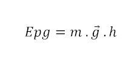
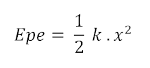

¿Qué es la Energía?
Todas aquellas actividades en la que se produzcan transformaciones - movimientos, cambios de temperatura, modificación en la formas de los objetos – necesitan de energía para llevarse a cabo.
¿Y de donde hay energía?
La Energía (palabra que en griego significa “en acción”) se encuentra en todos lados, pero solo podemos observar los efectos que produce sobre la materia, es decir, los cambios que ocurren gracias a ella.
La Energía es una magnitud y, por lo tanto, puede medirse y esa medición expresarse mediante unidades. En el Sistema Internacional (SI), la unidad de Energía es el Joule (J), en honor a James Prescott Joule, quien estudió las formas de la Energía.
El “origen” de la Energía en la Tierra.
Casi toda la energía que disponemos proviene del Sol, la cual, además de generar condiciones climáticas adecuadas para el desarrollo de la vida, crea una serie de fenómenos que podemos aprovechar. Algunos son:
- El ciclo del agua.
- Masas de aire en movimiento.
- Formación de energía orgánica.
Casi toda la energía que disponemos proviene del Sol, la cual, además de generar condiciones climáticas adecuadas para el desarrollo de la vida, crea una serie de fenómenos que podemos aprovechar. Algunos son:
- Se puede almacenar.
- Se puede transportar.
- Se puede transformar.
- Se puede transferir.
- No se crea ni se destruye.
Las Formas de la Energía
Energía Mecánica
Energía Cinética
¿Qué causaría más destrozos en un choque, una moto a 40 Km por hora o un auto a la misma velocidad?
Es evidente que un auto produce un efecto mayor al chocar. Esto se debe a que la Masa del auto es mayor.
Una expresión sencilla permite calcular la energía cinética de un cuerpo de masa m (expresado en Kg) que se mueve a una velocidad v (expresado en Km/h).
Energía Potencial
La energía potencial es aquella energía que está conservada y puede desencadenar su transformación en otro tipo. En cuanto a la Energía Mecánica, podemos encontrar:
Energía Potencial Gravitatoria
La energía potencial gravitatoria es la energía que almacenan en los cuerpos debido a su posición; por ejemplo al estar a cierta altura por encima del nivel del suelo.
Al elevar un objeto logramos que se almacene energía potencial gravitatoria en él, que dependerá de su masa m, dela altura h al a que se eleve y de la aceleración de la gravedad, según la fórmula:

Una expresión sencilla permite calcular la energía potencial gravitatoria de un cuerpo de masa m (expresado en Kg) que está elevado a una altura h (expresada en m), afectado por una gravedad g (que en la tierra está expresada como 9,8 m/s2).
Energía Potencial Elástica
La energía potencial elástica es la energía que puede conservar un cuerpo luego de la deformación de su forma. Como es el caso de los resortes, banditas elásticas o un arco al disparar una flecha.
Al estirar o comprimir (alterar su forma natural) por medio de energía cinética, el cuerpo aumenta su energía potencial elástica proporcionalmente a la alteración de tamaño sufrido y la constante de elasticidad, propiedad del material, según su fórmula:

Una expresión sencilla permite calcular la energía potencial elástica de un cuerpo de constante k (expresado en N . m -Newton por metro-) que está estirado una distancia x (expresada en metros).
Energía Eléctrica
La energía eléctrica la obtenemos de la red eléctrica o de pilas y baterías. Estas últimas son formas de almacenar energía eléctrica.
La electricidad hace funcionar muchos dispositivos que usamos a diario, como lámpara, televisores, licuadoras, computadoras, etc.
Si tomamos como ejemplo una licuadora pequeña a pilas, veremos que al analizar las transformaciones de energía, la energía electroquímica de las pilas se transforma en energía eléctrica que se produce en su interior se transforma en energía eléctrica y si esta es conducida por los cables al motor de la licuadora, obtendremos energía cinética.
Energía Nuclear
Esta forma de energía se llama así porque se obtiene del Núcleo de los átomos. Se manifiesta mediante reacciones nucleares, en las que se liberan grandes cantidades de energía en forma de radiaciones
Energía Térmica
Calentar un objeto implica entregarle energía y enfriar un objeto implica quitarle energía. A este tipo de energía que se transfiere de los objetos más calientes a los más fríos se denomina energía térmica o calor.
Energía Radiante
Todos los cuerpos que emiten luz, como el Sol, las lamparitas eléctricas, los faroles de querosene o velas, envían energía con sus radiaciones al medio que los rodea.
Las Fuentes de Energía
El hombre ha utilizado los recursos naturales de la Tierra como fuentes de energía desde el comienzo de su existencia. Así, la madera, el viento, el agua, el Sol y los combustibles fósiles como el carbón, el petróleo o el gas natural continúan siendo las principales fuentes de energía que permiten el desarrollo y crecimiento tecnológico de toda sociedad industrializada.
Las fuentes de energía se suelen clasificar, en general, como renovables y no renovables, ya que algunos de estos recursos son temporales y se agotan con el correr del tiempo. La renovabilidad de un recurso surge de comparar el tiempo que tarda en reproducirse o generarse, con el ritmo con el que se lo utiliza.
Fuentes de energía renovables: son las que la naturaleza renueva con rapidez, y podemos obtener energía de forma continua.
Fuentes de energía no renovables: son las que se encuentran en la Tierra y se agotan con su utilización, porque las cantidades son limitadas.
La Energía Hidráulica
La energía hidráulica se obtiene del aprovechamiento de la energía cinética o potencial de la corriente de agua.
La energía Solar
La energía solar llega desde el sol hasta la tierra en forma de radiación.
Energía de la biomasa
La biomasa es el conjunto de material orgánica, de origen animal o vegetal, procedentes de la transformación natural o artificial de los restos de los seres vivos.
Energía Eólica
La Energía eólica es una forma de energía cinética producida por el viento
Energía Geotérmica
La energía geotérmica es la que proviene del calor presente en el interior de la tierra.
Energía Mareomotriz
Esta energía es la que se obtiene del movimiento ascendente y descendente del agua de mar, producido por las mareas.
Energía de los combustibles fósiles
Los combustibles físiles son aquellos que se transformaron en el suelo terrestres haciendo millones de años, a partir de restos de seres vivos en presencia de ciertas condiciones de presión y temperatura. Estos son el carbón mineral, el petróleo y el gas natural.
Al elevar un objeto logramos que se almacene energía potencial gravitatoria en él, que dependerá de su masa m, dela altura h al a que se eleve y de la aceleración de la gravedad, según la fórmula:
Al estirar o comprimir (alterar su forma natural) por medio de energía cinética, el cuerpo aumenta su energía potencial elástica proporcionalmente a la alteración de tamaño sufrido y la constante de elasticidad, propiedad del material, según su fórmula:
El hombre ha utilizado los recursos naturales de la Tierra como fuentes de energía desde el comienzo de su existencia. Así, la madera, el viento, el agua, el Sol y los combustibles fósiles como el carbón, el petróleo o el gas natural continúan siendo las principales fuentes de energía que permiten el desarrollo y crecimiento tecnológico de toda sociedad industrializada.
Las fuentes de energía se suelen clasificar, en general, como renovables y no renovables, ya que algunos de estos recursos son temporales y se agotan con el correr del tiempo. La renovabilidad de un recurso surge de comparar el tiempo que tarda en reproducirse o generarse, con el ritmo con el que se lo utiliza.
Fuentes de energía renovables: son las que la naturaleza renueva con rapidez, y podemos obtener energía de forma continua.
Fuentes de energía no renovables: son las que se encuentran en la Tierra y se agotan con su utilización, porque las cantidades son limitadas.